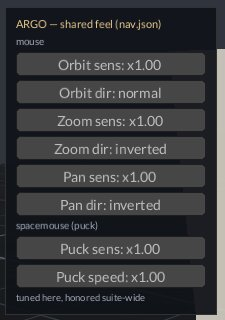

ARGO
The Argo carried fifty heroes but sailed as one ship — many hands, one helm, steering by one star. Every window in the suite is another helmsman on the same vessel: whatever your hands learn in one module, every other module already knows.
The helm. Every window steers by one shared feel — mouse, puck, and star.

What it is
ARGO is the shared feel: one calibration file
(~/.config/signature/nav.json) that every Leviathan window
steers by. Mouse orbit/zoom/pan sensitivity and direction; SpaceMouse
signs, sources, sensitivity, and fly speed; the Shift attitude layer.
Tune it in any window's NAV panel — Vitruvius, Ouranos, Hephaestus — and
every window follows. The buttons still read NAV, as ruled.
Each window writes only the keys it owns — read-modify-write — so one module's tuning never erases another's. The pane below is Hephaestus's, showing calibration inherited from tuning done in other windows.